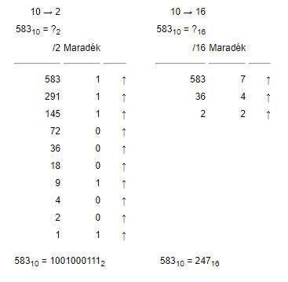

A tizenhatos (hexadecimális) számrendszer a 16-os számon alapuló számrendszer, az informatika kulcsfontosságú
számrendszere (zsargonban: hexa). A tizenhatos számrendszer a 0, 1, 2, 3, 4, 5, 6, 7, 8, 9 számjegyeken kívül
az A, B, C, D, E, F betűket (vagy ezeknek kisbetűs megfelelőjét; mindkettő használat megengedett) használja, ezek
segítségével ábrázolja a valós és komplex számokat. A 0–9 számjegyek használata értelemszerűb(azaz: a tízes számrendszernek megfelelő),
az A számjegy 10-et, a B számjegy 11-et, a C számjegy 12-t, a D számjegy 13-at, az E számjegy 14-et,
míg az F számjegy 15–öt jelöl (ez összesen 16 számjegy, tekintettel arra, hogy a nulla az első).
A tizenhatos számrendszer gyakran használatos a számítógépek körüli tudományágakban, mivel e számrendszer alapja,
a 16-os szám, egyenlő 24-nel, ami azt jelenti, hogy egy hexadacimális szám éppen négy bitet (1 nibble-t) képvisel.
Így tehát egy bájt értéke kifejezhető éppen egy kétjegyű hexadecimális számmal (a 00H – FFH intervallumban).
Ezzel az ábrázolással egyszerűbb a bitsorozatokat leírni, könnyebb olvasni, és nehezebb eltéveszteni:

A legkönnyebben megérthető módszer az, hogy megnézzük, hányszor van meg benne a lehető legnagyobb 16-hatvány, és ezt
ismételjük, amíg nullát nem kapunk. Ha decimális számrendszerből binárisba váltunk át, akkor a decimális számot
mindig kettővel kell osztani egészen addig, amíg a hányadosként 1-et nem kapunk. Az egyes osztások után feljegyezzük
a maradékot. A decimális szám bináris számrendszerbeli alakját úgy kapjuk, hogy a maradékokat visszafelé egymás után írjuk.
A visszafelé olvasást az indokolja, hogy mire 1-et kaptunk hányadosként, addig n-szer osztottunk le 2-vel, így 2n lesz az
a legnagyobb 2-hatvány, amellyel a szám osztható.
A decimális számrendszerből hexadecimálisba való atváltás ugyanezt a logikát követi, csupán nem kettővel, hanem tizenhattal történik a leosztás.
